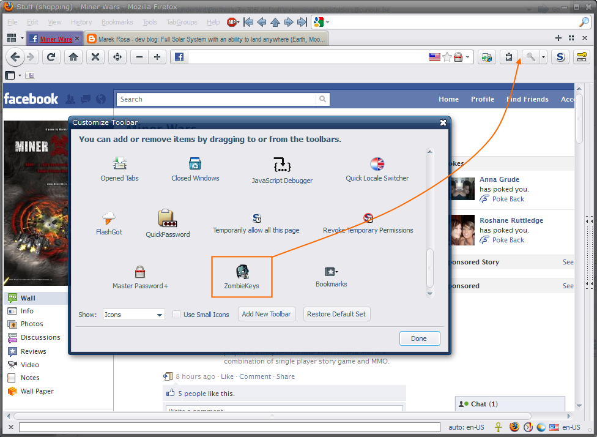
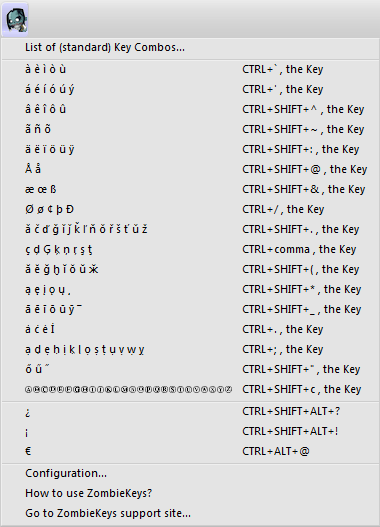

zombie keys
| Home Getting Started Details and Version History Key Locales Screenshots Contribute Bugs + Feature Requests |
Getting Started
To get started, simply install the version above. After restart all keyboard shortcuts for the dead keys will work immediately. To get a better idea and practice using the combinations:
- click View / Toolbars / Customize...
- drag and drop the ZombieKey onto a toolbar area:
 - Simply click the button to get an overview of all options.
 - Either: Click a menu item, press the letter key straight after. Ideal for sporadic usage.
- Or: Press the key combo, press the letter key straight after. This is faster once you are used to the key combos as you don't have to reach for the mouse while typing.